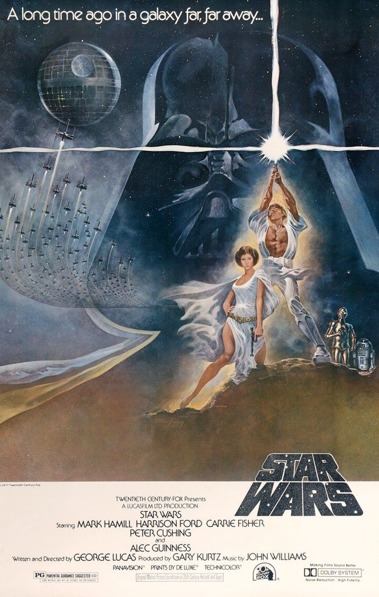

Star Wars é uma franquia do tipo space opera estadunidense criada pelo cineasta George Lucas, que conta com uma série de nove filmes de fantasia científica e dois spin-offs. O centro da trama é uma disputa política entre um império tirano e ditatorial e um grupo libertário. O enredo é permeado pela tragédia pessoal de Anakin Skywalker, um jedi (do bem) que sucumbe ao Lado Sombrio da Força (do mal) se transformando no vilão Darth Vader, que é um dos líderes do Império Galático. Star wars é uma história de fantasia que engloba elementos batidos na literatura e no cinema, como romance, drama, humor e luta entre bem e mal. O centro da trama é uma disputa política entre um império tirano e ditatorial e um grupo libertário. O enredo é permeado pela tragédia pessoal de Anakin Skywalker, um jedi (do bem) que sucumbe ao Lado Sombrio da Força (do mal) se transformando no vilão Darth Vader, que é um dos líderes do Império Galático.
O primeiro filme foi lançado apenas com o título Star Wars, em 25 de maio de 1977, e tornou-se um fenômeno mundial inesperado de cultura popular, sendo responsável pelo início da "era dos blockbusters", que são superproduções cinematográficas que fazem sucesso nas bilheterias e viram franquias com brinquedos, jogos, livros, etc. Foi seguido por duas sequências, The Empire Strikes Back e Return of the Jedi, lançadas com intervalos de três anos, formando a trilogia original, que segue o trio icônico formado por Luke Skywalker, Han Solo e Princesa Leia, que luta pela Aliança Rebelde para derrubar o tirano Império Galáctico; paralelamente ocorre a jornada de Luke para se tornar um cavaleiro Jedi e a luta contra Darth Vader, um ex-Jedi que sucumbiu ao Lado Sombrio da Força e ao Imperador.
O antigo universo expandido foi construído de modo não-canônico pela Lucasfilm em 2014, e seu material agora é lançado na Disney com o selo Legends, que tenta organizar o universo expandido, que contêm histórias contraditórias. Levando em consideração a nova trilogia, que conta uma história diferente do antigo canônico, a Disney considerou apenas os sete filmes e a série Clone Wars como canônico. O novo universo expandido entrou em vigor em 2014, com o primeiro produto oficial de Star Wars após a compra pela Disney, o Star Wars Rebels. Diferente do Legends, as histórias do novo universo expandido são supervisionadas pela Lucasfilm Story Group, fundado pela Kathleen Kennedy (presidente da Lucasfilm) com objetivo de manter a continuidade entre todos os produtos (filmes, livros, séries, quadrinhos e jogos) da franquia.